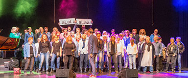

<div class="event-info">
	<div>
		<div class="img-wrap">
	
		</div>
		<div class="songs">
			<p>...</p>
			<p>...</p>
			<p>...</p>
			<p>...</p>
			<p>...</p>
		</div>
		<div class="content-wrap">
    <p><strong>De LanSingers uit Berkel en Roodenrijs</strong></p>
	<p>Popkoor voor Lansingerland en omgeving met af en toe een gospel of musicallied.</p>
	<p>Popkoor de LanSingers valt onder de activiteiten van het Charles Vermeer Zanginstituut te Capelle aan den IJssel.</p>
	<p>&nbsp;</p>
	<p>Dirigent: Gertjan Essenstam</p>
	<p>&nbsp;</p>
	<p><a href="https://www.lansingers.nl" target="_blank">https://www.lansingers.nl</a></p>
		</div>
	</div>
</div>